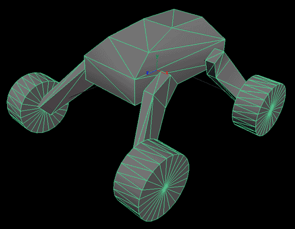
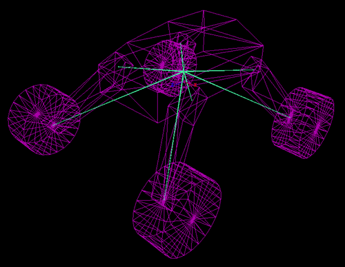
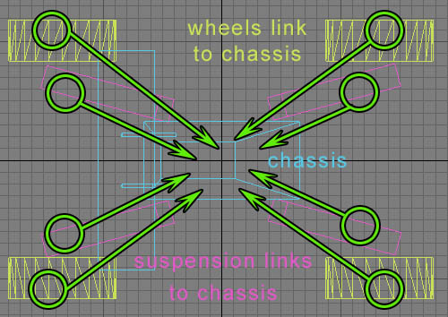
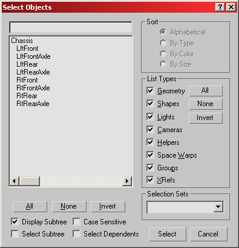
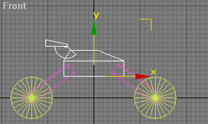
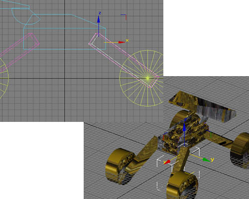
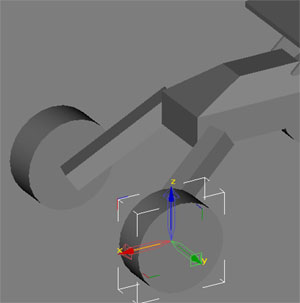
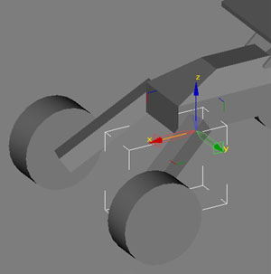
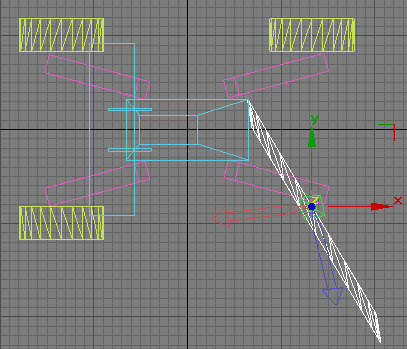

UDN
Search public documentation:
SVehicleCreation
Interested in the Unreal Engine?
Visit the Unreal Technology site.
Looking for jobs and company info?
Check out the Epic games site.
Questions about support via UDN?
Contact the UDN Staff
SVehicle Creation
Document Summary: This document goes over how to create SVehicles (also known as skeletal vehicles) in 2226 builds or later using either Maya or 3DS MAX. Document Changelog: Last updated by Michiel Hendriks, small v3323 update. Created on 8/11/03 by Chris Linder, Tom Lin, Chris Sturgill (DemiurgeStudios?) for build 2226.Related Documents
SVehicleReference SVehicleMayaMAXFix AnimBrowserReference KarmaReference KarmaCarCreation KarmaCars HotRodDo First (pre-v3323)
Not relevant for v3323 or newer, SVehicles is already present in the v3323 codebase. This document assumes that you have merged a patch for SVehicles into your codebase. The code change does two things; first it allows you to pick the axis about which wheels rotate, and second it changes it so that wheels and suspension rotate about local bone axes, not world axes. If you do not have this code change, you can still make SVehicles in Maya and this document will be mostly correct. If you are using MAX, you will not be able to get vehicles working without applying this code change. Get the code change here: SVehicleMayaMAXFixIntro
This document will go over what you need to know to create your own SVehicle. It will cover from modeling the vehicle to putting it in the engine. Included in this document are example vehicles in both Maya and 3D Studio MAX. This document also includes a .UKX animation package and map with these vehicles in the game. This document does not go over how to tune vehicles or how to create completely new types of SVehicles. See the SVehicleReference for information in that vain.Creation Overview
SVehicles are a different type of Karma vehicle than KVehicles. The main difference between SVehicles and KVehicles is that SVehicles are made of skeletal meshes as opposed to static meshes. You access SVehicles from the "Animations" browser and you export SVehicles from the modeling program with ActorX. Because the meshes have skeletons, SVehicles can include things like tires and moving gun turrets in the single mesh for the vehicle. Previously, with KVehicles, any moving part has to be a separate mesh and a separate object. SVehicles can be made in both Maya and 3D Studio MAX though the creation process is very different for each. Maya uses bones to control the different parts of the mesh. This is very similar to the normal animated skeletal mesh creation for Unreal. MAX on the other hand does not use any bones, despite the fact that this is a skeletal mesh. Object hierarchy in MAX can be used to generate a skeleton in Unreal. The different parts of the mesh are actually different objects in MAX all "linked" to the root object. Once created, unlike all other skeletal meshes for Unreal, SVehicles are not animated. The only thing that is important is the mesh/refpose; this is the only thing you should export from the modeling program and the only thing you should import into UnrealEd. Once in Unrealed, SVehicles are not linked to any existing animation.Rendering Speed Concerns
Traditionally, rendering speed is a concern for skeletal meshes in Unreal. This however is not the case for SVehicles, because they can take advantage of Rigidize which will speed up the rendering of the parts of skeletal meshes that have only one influence. Given that SVehicles generally do not have vertices that are influence by 2 or more bones, Rigidize makes SVehicles render about as fast static meshes.Center of Mass and Inertia
SVehicles are simulated with Karma and so the familiar concepts of center of mass and rotational inertia apply. When modeling an SVehicle, one can affect the center of mass but not the rotational inertia. These topics are covered here: Center of Mass Rotational InertiaCreating SVehicles in Maya
This example will go over how to make a car in Maya and then import it in Unreal and use it as the body for a jeep.Making the Car
When making a car in Maya, first start by orienting the car in the forward Z direction (so that the front is pointed toward positive Z and the rear toward negative Z). Note: It is not necessary to change the default coordinate system of Maya. (Maya defaults to a coordinate system in which "Y" is up.) If the vehicle is oriented as described above, this difference in coordinate systems is not an issue. Next, model the various components of the car (chassis, wheels, suspension struts, etc). These components can be part of a single mesh but they do not have to be; your SVehicle can be made of several different objects as long as they are all bound to the one skeleton. Then go the joint tool, and create a skeleton, placing the joints at the point you want the respective components to rotate. For example, the joint for a tire should be in the center of the tire, so that it rotates correctly. Non-intuitively, tires are not children of suspension bones. They are both children of the chassis. For example, a car's front right tire would not be a child of the front right strut. They would both be a child of the chassis. Once the skeleton is created and the joints are correctly placed, bind the geometry to the skeleton using Smooth Bind. Then, in the Component Editor, set the influence of each vehicle part to it's respective joint. It's a very good idea to bind all the verts of a given vehicle part to a single bone, to keep things rigid. For example, all the verts of a tire should be influenced only by the Right Tire joint. Finally, export the geometry using the Actor X skeletal exporter to a .PSK file. The following images show the vehicle in Maya:

You can download the MayaCar.mb file to see the car described in this example.Bone Orientation
By default, when creating bones in Maya, each bone will be oriented with world coordinates (X is left, Y is up, Z is forward). The orientation of bones is important because it is along the axis of bone's coordinate system that wheels and suspension rotate. By changing the orientation of a bone's coordinate system, you can get the wheels and suspension to rotate around axes other than world axes. This is done in one of the Maya example cars. The wheels of this car are flared out and do not rotate on an orthogonal axis. You can download the MayaCarTilted.mb file to see this car.Importing the Car in UnrealEd
Once you have the .PSK file, you are ready to import the car into UnrealEd. Open the "Animations" browser in UnrealEd and select "Mesh import" from the File menu. Find the .PSK file you want and then in the "Import Mesh/Animation" make sure you check "Assume Maya coordinates" box and then click "OK". At this point, models from Maya and MAX are basically the same except that the coordinate systems are most likely different. Now you are ready for the Setting Up SVehicles in UnrealEd section.Creating SVehicles in 3D Studio MAX
This example will go over how to make a car in MAX and then import it in Unreal and use it as the body for a jeep.Making the Car
Making an SVehicle car from 3D Studio Max is actually pretty easy, once you know all the little tricks and requirements that you have to fulfill. There are a few steps to it; I'll address them in creation order.Construction
Making a vehicle in max is pretty easy. No bones/weighting/etc is necessary at all; all you have to do is create a collection of objects linked up correctly. The most important concept to remember is that the linking process will be interpreted in Unreal as the bone hierarchy, so doing that correctly is very important.Linking
There are no hard limits on the number of suspension struts or how many tires you can have on a vehicle. In general you want to link each individual piece to the main body of the vehicle. You could link to an intermediary bone that links back to the main body, but at least when making a car, this serves no purpose. Make sure you don't link the tires to the suspension struts.
Your hierarchy should look like this if you've done the linking correctly.
Naming
This will change depending on your vehicle, and your programmers. If there is already a standard in place, simply ask your friendly neighborhood programmer to give you the desired names for the individual pieces. Otherwise, just make sure the names of the pieces are all different. If they are logical, that's even better.Orientation
To make sure that the import process goes smoothly, make sure your model is oriented facing in the positive X direction.
Pivot Points
When you set up your car, you will need to change the pivot points for some of the components. The struts shown on the mockup car (see image, below) demonstrate where the pivots should be placed; the logical connection between the struts and the chassis of the car.
The orientation of the pivots is also important because it affects which way the tires and suspension rotate. You can see the alignment of the pivots by going to hierarchy and clicking "Affect Pivot Only". You should be able to freely rotate the pivots with this selected. If for some reason you can not rotate the pivot without affecting the object, you need to Reset Pivots. In the example car all the pivots are oriented with the world coordinate system. This means that X (red) is forward, Y (green) is left, and Z (blue) is up. In most cases, this is what you want. You can set all the pivots by selecting all the objects, making sure "Affect Pivot Only" is selected and then typing 0.0 in all the "Absolute:World" rotation dialog. (You can set the car to a Maya coordinate system by typing 90 in X and 90 in Z.) Now that we have the pivots set to world orientation, we can easily see we want the wheels to rotate around the Y axis.
The suspension can rotate about either the Y axis or the X axis depending on what you want (they look different but both look good).
If you want the suspension or the wheels to rotate around a non-world axis, you can simply rotate the pivot till it is oriented with one of the axes pointed along the axis about which you want to rotate.Mirroring
A word of caution: mirroring pieces of your car will also result in mirroring of your pivot point coordinate systems. If you mirror pieces, make sure to correct your pivots (see below) before importing the vehicle.Reset Pivots
If you find that your coordinate system is broken in some way, you may need to reset your pivot points. If you are rotating your pivot points and you see something like this happening, you'll want to fix them.
To fix this, I've found an ugly set of steps that works. If you find a better system, please let me know.- Create a new primitive, and make sure it has the correct pivot alignment.
- Attach all the objects in your model to this new primitive. It should be one noncontinuous mesh when you are finished.
- Detach all the pieces from the primitive.
- You should see that the individual components have inherited the correct pivot from the primitive.
- Delete the primitive.
- Re-center all of the pivot points for your various components.
- Rename all of your component pieces.
- Link pieces to chassis and export.